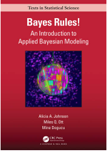
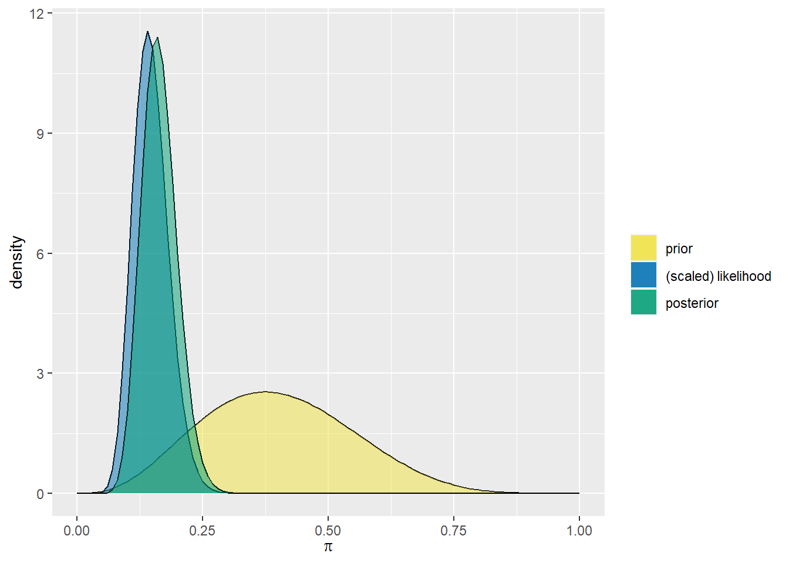
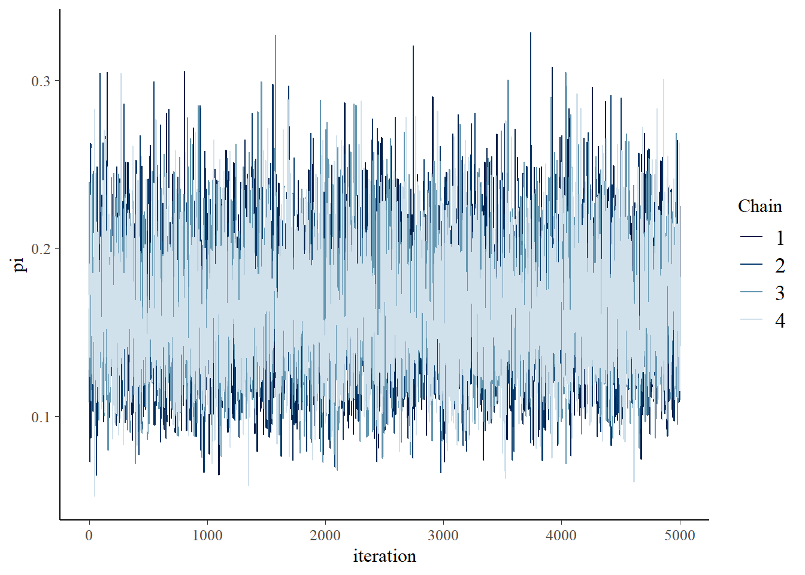
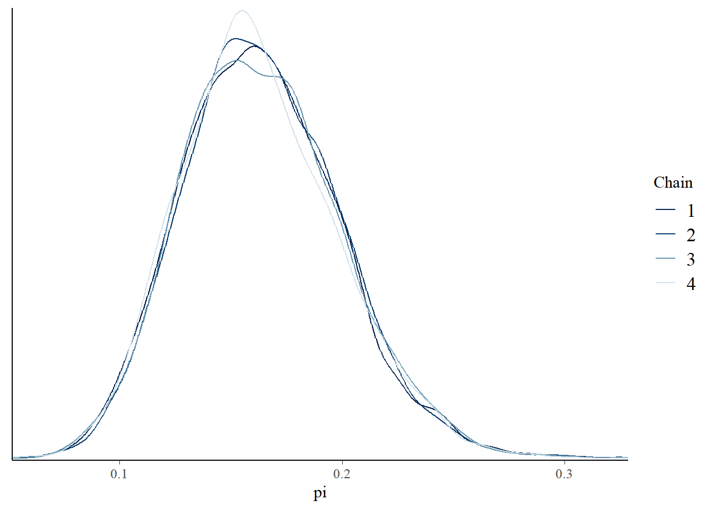
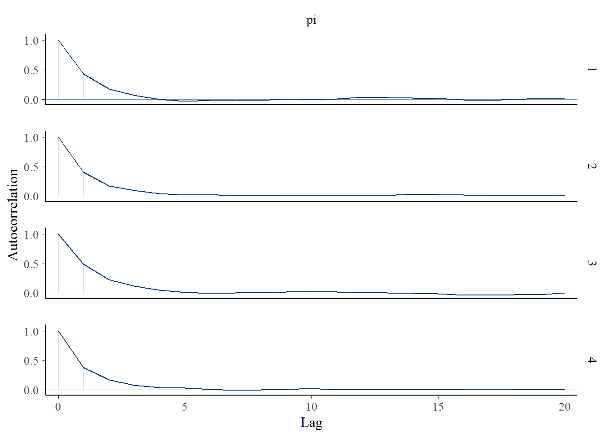
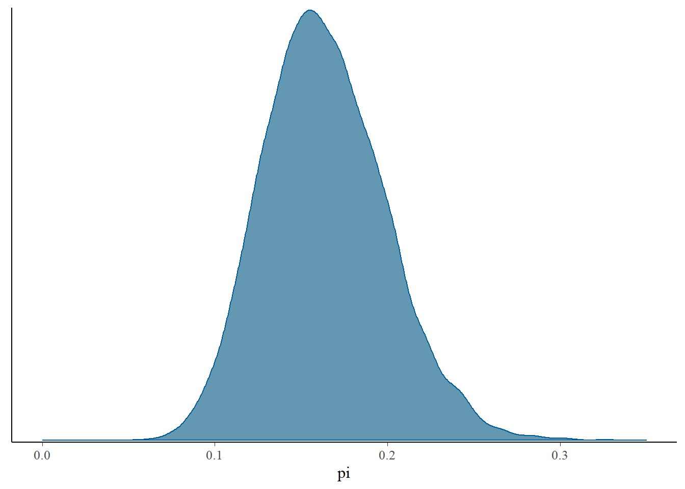
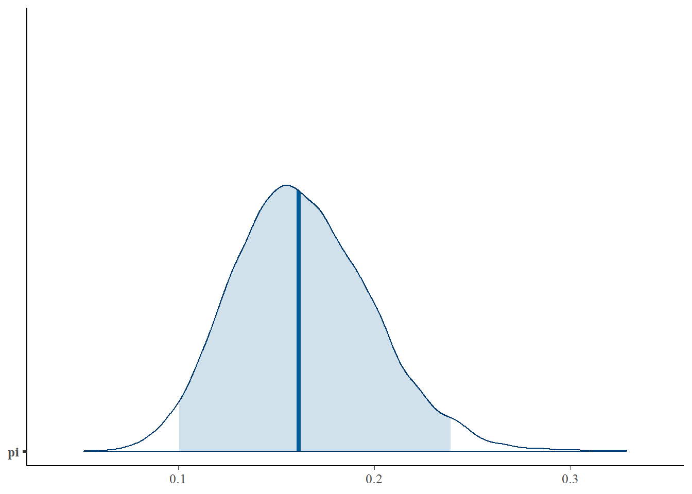

In deze blog wordt getoond wat je met Bayes wetenschappelijk kunt: schatten, testen en voorspellen.
Author
Johnson e.a. en Harrie Jonkman
Published
March 29, 2022

Bayes Rules
Inleiding
Onlangs verscheen een prachtig boek van Alicia A. Johnson, Miles Q. Ot en Mine Dogucu onder de titel Bayes Rules! An Introduction to Applied Bayesian Modeling en het verscheen bij CRC Press (2022). Eerdere versies kon je al via bookdown bekijken (https://www.bayesrulesbook.com/) en vanaf de eerste keer dat ik het zag, was ik hier heel enthousiast over. Het boek heb ik direct besteld en vorige week kon ik het ophalen.
Het boek bestaat uit vier duidelijke delen. Het eerste deel gaat in op de fundamenten van het Bayesiaanse perspectief. Het leert je denken als een Bayesiaan en het gaat in op die belangrijke Bayesiaanse regel \(posterior=\frac{prior.likelihood}{normaliserende constante}\). Aan de hand van enkele voorbeelden gaan Johnson e.a. in op hoe het in de praktijk werkt. Daarna gaat het in op hoe kennis en data op elkaar inwerken en laat het enkele basisanalyses zien en hoe dat in deze vorm van statistiek werkt (normaal, binair en poisson). Het tweede deel is een meer technisch hoofdstuk en laat je ook onder de moterkap van deze techniek kijken. Het gaat ook in op de wetenschappelijke principes van de benadering, waar je hier op moet letten, hoe je hiermee hypothesen kunt testen (niet alleen tov van een nulhypothese, maar hoeveel beter de ene hypothese is ten opzichte van de andere hyposthese) en hoe je hiermee ook kunt voorspellen. De twee volgende delen (Deel drie en vier) zijn praktische delen. Deel drie gaat in op regressieanalyses voor continue variabelen en classificatieanalyses voor binaire variabelen. Het vierde deel ten slotte gaat in op geclusterde datasets en hoe je hierarchische Bayesiaanse regressie en classificatieanalyses uitvoert.
Natuurlijk, er zijn onderhand al verschillende interessante boeken te krijgen die je laten zien hoe Bayesiaanse denken in de praktijk kan werken. De boeken van Gelman, McElreath, Spiegelhalter en Kruschke verschenen de afgelopen tien/vijftien jaar en leren je dit. Maar Bayes Rules! vind ik op dit moment als introductieboek mogelijk wel het beste.
Nu het boek bij mij op het bureau ligt, kan ik er binnenkort een keer een korte recensie over schrijven. Voor nu heb ik uit elk deel een hoofdstuk genomen en het vertaald en bewerkt. Hieronder zie je een bewerking van het achtste hoofdstuk van het tweede deel (Posterior Inference & Prediction).Hoofdstukken zo overzetten is voor mij niet alleen een goede manier om het mij eigen te maken, maar ook een manier om het boek anderen aan te raden. Dus lezen en gebruiken deze Bayes Rules! An Introduction to Applied Bayesian Modeling
Posterior inferentie en voorspelling
Stel je voor dat je in het Museum of Modern Art (MoMA) in New York City staat, gefascineerd door het kunstwerk voor je. Hoewel je begrijpt dat “moderne” kunst niet noodzakelijk “nieuwe” kunst betekent, komt er toch een vraag bij je op: wat is de kans dat deze moderne kunstenaar Gen X is of zelfs jonger, d.w.z. geboren in 1965 of later? Hier voeren we een Bayesiaanse analyse uit met als doel deze vraag te beantwoorden. Laat daartoe \(\pi\) het aandeel zijn van de kunstenaars vertegenwoordigd in de grote Amerikaanse musea voor moderne kunst die Gen X of jonger zijn. Het Beta(4,6) prior model voor \(\pi\) dat onze eigen zeer vage aanname weerspiegelt dat grote moderne kunstmusea onevenredig veel kunstenaars tonen die geboren zijn voor 1965, d.w.z, \(\pi\) valt hoogstwaarschijnlijk onder 0,5. Moderne kunst” dateert immers van de jaren 1880 en het kan een tijdje duren voor men zo’n hoge erkenning in de kunstwereld bereikt.
Om meer te weten te komen over \(\pi\), zullen we \(n\)=100 kunstenaars uit de collectie van het MoMA nemen. Deze moma_sample dataset in het bayesrules pakket is een subset van gegevens die door het MoMA zelf beschikbaar zijn gesteld (zie MuseumofModernArt 2020-“MoMA – Collection.” GitHub Repository).
# Op de pakketten (wel eerst installeren uiteraard) library(bayesrules)library(tidyverse)
Warning: package 'tidyverse' was built under R version 4.1.3
v ggplot2 3.3.6 v purrr 0.3.4
v tibble 3.1.7 v dplyr 1.0.9
v tidyr 1.2.0 v stringr 1.4.1
v readr 2.1.2 v forcats 0.5.1
Warning: package 'ggplot2' was built under R version 4.1.3
Warning: package 'tibble' was built under R version 4.1.3
Warning: package 'tidyr' was built under R version 4.1.3
Warning: package 'readr' was built under R version 4.1.3
Warning: package 'dplyr' was built under R version 4.1.3
Warning: package 'stringr' was built under R version 4.1.3
-- Conflicts ------------------------------------------ tidyverse_conflicts() --
x dplyr::filter() masks stats::filter()
x dplyr::lag() masks stats::lag()
library(rstan)
Warning: package 'rstan' was built under R version 4.1.3
Loading required package: StanHeaders
rstan (Version 2.21.5, GitRev: 2e1f913d3ca3)
For execution on a local, multicore CPU with excess RAM we recommend calling
options(mc.cores = parallel::detectCores()).
To avoid recompilation of unchanged Stan programs, we recommend calling
rstan_options(auto_write = TRUE)
Do not specify '-march=native' in 'LOCAL_CPPFLAGS' or a Makevars file
Attaching package: 'rstan'
The following object is masked from 'package:tidyr':
extract
library(bayesplot)
Warning: package 'bayesplot' was built under R version 4.1.3
This is bayesplot version 1.9.0
- Online documentation and vignettes at mc-stan.org/bayesplot
- bayesplot theme set to bayesplot::theme_default()
* Does _not_ affect other ggplot2 plots
* See ?bayesplot_theme_set for details on theme setting
library(broom.mixed)
Warning: package 'broom.mixed' was built under R version 4.1.3
library(janitor)
Attaching package: 'janitor'
The following objects are masked from 'package:stats':
chisq.test, fisher.test
# data openendata("moma_sample")
Onder deze groep artiesten zitten 14 Gen X of jongere artiesten (\(Y=14\)).
moma_sample %>%group_by(genx) %>%tally()
# A tibble: 2 x 2
genx n
<lgl> <int>
1 FALSE 86
2 TRUE 14
\(Y|\pi\) kun je het beste opvatten en dat betekent dat onze analyse het bèta-binomiale kader volgt. On aangepast posterior model van \(\p\) in het licht van de waargenomen kunstgegevens ziet er als volgt uit:
\[Y|\pi \sim Bin(100,\pi) \\
\pi\sim Beta(4,6)\] wordt \[\pi|Y=14) \sim Beta(18,92)\]
met de corresponderende posterior pdf \[f(\pi|y=14)=\frac{\Gamma(18+92)}{\Gamma(18)\Gamma(92)}\pi^{18-1}(1-\pi)^{92-1} for \pi \epsilon[0,1].\]
De evolutie in ons begrip van \(\pi\) is hieronder te zien. Terwijl we begonnen met een vaag begrip dat minder dan de helft van de tentoongestelde kunstenaars Gen X zijn, hebben de gegevens ons met enige zekerheid doen stellen dat dit cijfer waarschijnlijk onder 25% ligt.
plot_beta_binomial(alpha =4, beta =6, y =14, n =100)

Nadat we succesvol de posterior hebben geconstrueerd, besefen we ons dat er nog veel werk voor ons ligt. We moeten deze posterior kunnen gebruiken om een rigoureuze posterior analyse uit te voeren. Er zijn drie algemene taken in posterior analyse: schatting, hypothesetest, en voorspelling. Bijvoorbeeld, wat is onze preciese schatting van \(\pi\)? Ondersteunt ons model de bewering dat minder dan 20% van de museumkunstenaars Gen X of jonger zijn? Als we 20 extra museumkunstenaars zouden nemen, hoeveel voorspellen we dan dat Gen X of jonger zullen zijn? Laat je gevoel eens spreken, wat denk je:
a. Ongeveer 16% van de museum kunstenaars zijn Gen X of jonger.
b. Het is zeer waarschijnlijk dat ongeveer 16% van de museumkunstenaars Gen X of jonger is, maar dat cijfer zou ook tussen 9% en 26% kunnen liggen.
Als je antwoordde met antwoord b, is je denkwijze Bayesiaans van geest.
[Figuur: Ons Beta(18, 92) posterior model voor \(π\) (links) naast een alternatief Beta(4, 16) posterior model (rechts). De gekleurde gebieden geven de overeenkomstige 95% posterior geloofwaardigheids intervallen weer voor ]
De clou hier is dat posterieure schattingen zowel de centrale tendens als de variabiliteit in \(\pi\). Het posterior gemiddelde en de modus van \(\pi\) geven een snel overzicht van enkel de centrale tendens. Deze kenmerken voor onze Beta(18, 92) posterior volgen uit de algemene Beta-eigenschappen komen overeen met onze bovenstaande observatie dat de Gen X vertegenwoordiging hoogstwaarschijnlijk rond 16% ligt:
Laten we eens opnieuw kijken naar het Beta(18, 92) posterior model voor \(\pi\), het percentage moderne kunst museumkunstenaars dat Gen X of jonger is (zie figuur hierboven). In een Bayesiaanse analyse kunnen we dit hele posterior model zien als een schatting van \(\pi\). Immers, dit model van posterior plausibele waarden geeft een compleet beeld van de centrale tendens en onzekerheid in \(\pi\). Maar bij het specificeren en communiceren van ons posterior begrip is het ook nuttig om eenvoudige posterior samenvattingen te berekenen van \(\pi\).
Beter is het nog, om zowel de centrale tendens als de variabiliteit in \(\pi\) te kunnen rapporteren als een reeks van aannemelijke posterior aannemelijke \(\pi\) waarden. Dit bereik wordt een posterior geloofwaardigheids interval (CI, Credible Interval) genoemd voor \(\pi\). We hebben bijvoorbeeld eerder opgemerkt dat het aandeel museumkunstenaars dat Gen X of jonger is, hoogstwaarschijnlijk tussen 10% en 24% ligt. Dit bereik vangt de meer plausibele waarden van \(\pi\) terwijl de meer extreme en onwaarschijnlijke scenario’s worden geëlimineerd. In feite zijn 0,1 en 0,24 de 2,5e en 97,5e posterior percentielen (d.w.z. 0,025ste en 0,975ste posterior kwantielen). Dit zijn is het middelste deel, 95% CI van de posterior geloofwaardige \(\pi\)waarden. We kunnen deze Beta(18,92) posterior quantiel berekeningen bevestigen met qbeta():
# 0.025-0.975 interval van de Beta(18,92) posteriorqbeta(c(0.025, 0.975), 18, 92)
[1] 0.1009084 0.2379286
Het resulterende 95% geloofwaardigheidsinterval voor \(\pi\), (0,1, 0,24), wordt weergegeven door het gekleurde gebied in de figuur hierboven (links). Terwijl het gebied onder de gehele posterior pdf 1 is, is het gebied van dit gekleurde gebied 0,95, dus de fractie van \(\pi\)waarden die in dit gebied vallen. Dit onthult een intuïtieve interpretatie van de CI. Er is een 95% posterior waarschijnlijkheid dat ergens tussen 10% en 24% van de museumkunstenaars Gen X of jonger zijn:
Sta hier alstublieft even stil. Voelt deze interpretatie natuurlijk en intuïtief aan? Dus, een beetje anticlimactisch? Als dat zo is, zijn we blij dat je er zo over denkt - het betekent dat je denkt als een Bayesiaan.
Bij de constructie van de CI hierboven hebben we een “middelste 95%” benadering gebruikt. Dit is niet onze enige optie. De eerste aanpassing die we kunnen doen is het geloofwaardige niveau van 95% (zie figuur hieronder). Bijvoorbeeld, een middelste 50% CI, van het 25ste tot het 75ste percentiel, zou onze aandacht vestigen op een kleiner bereik van enkele van de meer plausibele \(\pi\) waarden. Er is een 50% posterior waarschijnlijkheid dat ergens ligt tussen 14% en 19% van de museumkunstenaars Gen X of jonger zijn:
# 0.25-0.75 interval van de Beta(18,92) posteriorqbeta(c(0.25, 0.75), 18, 92)
[1] 0.1388414 0.1862197
In de andere richting zou een bredere 99%-controlegrens van 0,5 tot 99,5 percentiel lopen. In dat geval wordt alleen de extreme 1% uitgeslopten. Als zodanig zou een 99% CI ons een vollediger beeld geven van plausibele en in sommige gevallen zeer onwaarschijnlijke\(\pi\)waarden:
# 0.005-0.995 interval van de Beta(18,92) posteriorqbeta(c(0.005, 0.995), 18, 92)
[1] 0.08530422 0.26468037
Hoewel een 95%-niveau een gebruikelijke keuze is, is het enigszins arbitrair en gewoon ingebakken door decennia van traditie. Er is niet één “juist” geloofwaardigheidsniveau. Je kunt net zo makkelijk 50%, 80% of 95% niveaus gebruiken, afhankelijk van de context van de analyse. Elk geeft een ander posterior begrip.
Posterior hypothese testing
Eenzijdige tests
Het testen van hypothesen is een andere veel voorkomende taak bij posterior analyse. Bijvoorbeeld, stel dat we een artikel lezen waarin wordt beweerd dat minder dan 20% van de museumkunstenaars Gen X of jonger zijn. Twee aanwijzingen die we hebben waargenomen uit ons posterior model van \(\pi\) wijzen erop dat deze bewering op zijn minst voor een deel plausibel is:
Het grootste deel van de posterior pdf in figuur hieronder valt onder 0.2.
Het 95% CI voor \(\pi\) (0.1, 0.24) zit vooral onder 0.2.
Deze waarnemingen zijn een goed begin. Maar we kunnen nog preciezer zijn. Om precies te evalueren hoe aannemelijk het is dat \(\pi<0.2\), kunnen we de posterior waarschijnlijkheid van dit scenario berekenen, $P(<0.2|Y=14). Deze posterior waarschijnlijkheid wordt weergegeven door het gearceerde gebied onder de posterior pdf in xxxxx. Het wordt wiskundig berekend door de posterior pdf te integreren in het gebied van 0 tot 0,2:
\[P(\pi<0.2|Y=14)=\int_{0}^{0.2}f(\pi|y=14)d\pi\] We zullen de integratie omzeilen en deze Beta(18,92) posterior waarschijnlijkheid verkrijgen met pbeta() hieronder. Het resultaat toont een sterk bewijs ten gunste van onze bewering: er is ongeveer 84,9% posterior kans dat Gen X-ers minder dan 20% van de moderne kunst museumkunstenaars uitmaken.
# Posterior waarschijnlijkheid dat pi < 0.20post_prob <-pbeta(0.20, 18, 92)post_prob
[1] 0.8489856
De analyse van onze bewering is verfrissend eenvoudig. Wij hebben eenvoudigweg de posterior waarschijnlijkheid van het scenario van belang berekend. Hoewel dit niet altijd nodig is, formaliseren mensen uit de praktijk deze procedure vaak in een raamwerk voor het testen van hypothesen. Wij kunnen onze analyse bijvoorbeeld omkaderen met twee concurrerende hypothesen: de nulhypothese \(H_0\) stelt dat minstens 20% van de museumkunstenaars Gen X of jonger zijn (de status quo hier), terwijl de alternatieve hypothese \(H_{\alpha}\) (onze bewering) stelt dat dit cijfer lager is dan 20%. In wiskundige notatie:
$$H_0: \
H_{}:< 0.2$$ Merk op dat \(H_{\alpha}\) beweert dat \(\pi\) aan één kant van 0,2 ligt (\(\pi<0.2\)) in tegenstelling tot gewoon verschillend zijn dan 0.2 (\(\pi\ne0.2\)). We noemen dit dus een eenzijdige hypothesetoets. We hebben de posterior waarschijnlijkheid van de alternatieve hypothese al berekend als \(P(H_{\alpha}|Y=14=0.849\). De posterieure waarschijnlijkheid van de nulhypothese is dus \(P(H_0|Y=14)=0.151\). Samengenomen is de posterior odds dat \(\pi<0.2\) ruwweg 5,62 zijn. Dat wil zeggen, onze posterieure beoordeling is dat \(\pi\) bijna 6 keer meer kans heeft om onder 0,2 te liggen dan om boven 0,2 te liggen:
Het is goed te weten dat er enige theorie achter Bayesiaanse posterior analyse zit. En wanneer we werken met modellen die zo eenvoudig zijn als de Beta-Binomiaal, kunnen we deze theorie direct implementeren - dat wil zeggen, we kunnen exacte posterior geloofwaardige intervallen, waarschijnlijkheden, en voorspellende modellen berekenen. Maar het is duidelijk dat dit mooie terrein ook betreden kan worden bij scenario’s waarin we geen posterior modellen kunnen specificeren, laat staan exacte samenvattingen van hun eigenschappen kunnen berekenen. In deze scenario’s kunnen we posteriores benaderen met behulp van MCMC methoden. Laten we nu eens onderzoeken hoe we dit soort Markov chain steekproefwaarden ook kunnen worden gebruikt om specifieke posterior kenmerken te benaderen. Laten we eens zien hoe we dit soort methodes kunnen gebruiken om posterior analyses uit te voeren.
Hieronder worden vier parallelle Markovketens uitgevoerd van \(\pi\) voor 10.000 iteraties elk. Na het weggooien van de eerste 5.000 iteraties van elke keten, houden we nog vier afzonderlijke Markovketens van 5.000 over, {\({\pi^{1}, \pi^{(2)}, ..., \pi^{(5000)}}\)}, of een gecombineerde Markov-keten steekproefgrootte van 20.000.
Posterior simulatie
# STAP 1: DEFINEER HET modelart_model <-" data { int<lower = 0, upper = 100> Y; } parameters { real<lower = 0, upper = 1> pi; } model { Y ~ binomial(100, pi); pi ~ beta(4, 6); }"# STAP 2: SIMULEER DE POSTERIORart_sim <-stan(model_code = art_model, data =list(Y =14), chains =4, iter =5000*2, seed =84735)
Bekijk de numerieke en visuele diagnostiek in de figuur hieronder eens. Ten eerste duiden de willekeurigheid in de sporenplots (links), de overeenstemming in de dichtheidplots van de vier parallelle ketens (midden) en een Rhat-waarde van effectief 1 erop dat onze simulatie uiterst stabiel is. Verder gedragen onze afhankelijke ketens zich elk “genoeg” als een onafhankelijk sample. De autocorrelatie, rechts weergegeven voor slechts één keten, neemt snel af en de verhouding van de effectieve steekproefgrootte is bevredigend hoog - onze 20.000 Markov-ketenwaarden zijn even effectief als 7600 onafhankelijke steekproeven (0,38 ⋅ 20000).
# Parallelle spoor(trace) plotten & density plottenmcmc_trace(art_sim, pars ="pi", size =0.5) +xlab("iteration")

mcmc_dens_overlay(art_sim, pars ="pi")

# Autocorrelatie plotmcmc_acf(art_sim, pars ="pi")

# MC diagnostiekrhat(art_sim, pars ="pi")
[1] 1.000508
neff_ratio(art_sim, pars ="pi")
[1] 0.4032414
Posterior schatting en hypothese testen
We kunnen nu de gecombineerde 20.000 Markovketenwaarden gebruiken, met vertrouwen, om het Beta(18, 92) posterior model te benaderen van \(\pi\). Het figuur hieronder bevestigt inderdaad dat de volledige MCMC-benadering (rechts) de werkelijke posterior (links) dicht benadert.
# MCMC posterior benaderingmcmc_dens(art_sim, pars ="pi") +lims(x =c(0,0.35))
Scale for 'x' is already present. Adding another scale for 'x', which will
replace the existing scale.

Als zodanig kunnen wij elk kenmerk van het Beta(18, 92) posterior model benaderen door het overeenkomstige kenmerk van de Markov-keten. Wij kunnen bijvoorbeeld het posterieure gemiddelde benaderen door het gemiddelde van de MCMC-steekproefwaarden, of het 2,5-percentiel posterior benaderen door het 2,5-percentiel van de MCMC-steekproefwaarden. Hiertoe levert de tidy() functie in het broom.mixed pakket (Bolker en Robinson 2021. Broom.mixed: Tidying Methods for Mixed Models)[https://github.com/bbolker/broom.mixed] een aantal handige statistieken voor de gecombineerde 20.000 Markov chain waarden die zijn opgeslagen in art_sim:
tidy(art_sim, conf.int =TRUE, conf.level =0.95)
# A tibble: 1 x 5
term estimate std.error conf.low conf.high
<chr> <dbl> <dbl> <dbl> <dbl>
1 pi 0.161 0.0352 0.100 0.239
En de mcmc_areas()-functie in het bayesplot-pakket biedt een visuele aanvulling (zie de figuur hieronder)
# Kleur in het midden het 95% intervalmcmc_areas(art_sim, pars ="pi", prob =0.95)

In de tidy() samenvatting geven conf.low en conf.high de 2,5e en 97,5e percentielen van de Markov-ketenwaarden aan, respectievelijk 0,101 en 0,239. Deze vormen bij benadering het midden 95%- geloofwaardigheidsinterval voor \(\pi\) dat wordt weergegeven door het gearceerde gebied in de mcmc_areas()-plot. Verder meldt de schatting dat de mediaan van onze 20.000 Markov chain-waarden, en dus onze benadering van de werkelijke posterieure mediaan, 0,162 is. Deze mediaan wordt weergegeven door de verticale lijn in de mcmc_areas()-plot. Net als het gemiddelde en de modus geeft de mediaan een andere maat voor een “typische” posterior \(\pi\) waarde. Hij komt overeen met het 50ste posterior percentiel - 50% van posterior \(\pi\) waarden liggen boven de mediaan en 50% liggen eronder. Maar in tegenstelling tot het gemiddelde en de modus, bestaat er geen eenduidige formule voor een Beta(\(\alpha, \beta\))-mediaan. Dit legt nog meer moois bloot van MCMC simulatie: zelfs als een formule ongrijpbaar is, kunnen we een posterior eenheid schatten door de overeenkomstige eigenschap van onze waargenomen Markov chain steekproefwaarden.
Hoewel het een mooie eerste stop is, geeft de tidy() functie niet altijd elke samenvattende statistiek die van belang is. Hij rapporteert bijvoorbeeld niet het gemiddelde of de modus van onze Markov chain steekproefwaarden. Geen probleem. We kunnen samenvattende statistieken rechtstreeks uit de Markov chain waarden berekenen. De eerste stap is het omzetten van een matrix van de vier parallelle ketens in een enkel dataframe van de gecombineerde ketens:
# Sla de 4 kettingen op in 1 data frameart_chains_df <-as.data.frame(art_sim, pars ="lp__", include =FALSE)dim(art_chains_df)
[1] 20000 1
Met de ketens in dataframe-vorm kunnen wij op de gebruikelijke manier te werk gaan en onze dplyr gereedschappen gebruiken om een en ander te transformeren en samen te vatten. Wij kunnen bijvoorbeeld direct het steekproefgemiddelde, de mediaan, de modus en de kwantielen van de gecombineerde Markov-ketenwaarden berekenen. De mediaan- en kwantielwaarden zijn precies die welke door tidy() hierboven worden gerapporteerd, en elimineren dus elk mysterie over die functie!
# Bereken de posterior samenvattingen van piart_chains_df %>%summarize(post_mean =mean(pi), post_median =median(pi),post_mode =sample_mode(pi),lower_95 =quantile(pi, 0.025),upper_95 =quantile(pi, 0.975))
Wij kunnen de ruwe kettingwaarden ook gebruiken om de volgende taak in onze posterior analyse aan te pakken - het testen van de bewering dat minder dan 20% van de grote museumkunstenaars Gen X zijn. Daartoe kunnen wij de posterior waarschijnlijkheid van dit scenario benaderen, \(P(\pi<0.20|Y=14)\), door het aandeel Markovketen \(\pi\)πwaarden die onder 0,20 vallen. Volgens deze benadering is er een kans van 84,6% dat de vertegenwoordiging van Gen X-artiesten onder 0,20 ligt:
# Zet de pi waarden in een tabel die onder de 0.20 zittenart_chains_df %>%mutate(exceeds = pi <0.20) %>%tabyl(exceeds)
exceeds n percent
FALSE 3043 0.15215
TRUE 16957 0.84785
Laat het op je inwerken en onthoud het punt. We hebben onze MCMC simulatie gebruikt om het posterior model van \(\pi\) te benaderen samen met de eigenschappen van belang. Ter vergelijking, de tabel hieronder toont de Beta(18,92) posterior kenmerken die we eerder hebben berekend naast hun overeenkomstige MCMC-benaderingen. De clou is dit: MCMC werkte. De benaderingen zijn vrij nauwkeurig. Laat dit u geruststellen - ook als modellen te ingewikkeld zijn om te specificeren, kunnen we vertrouwen hebben in onze MCMC-benaderingen van deze modellen (zolang de diagnostiek maar klopt!).
gemiddelde
modus
2.5
97.5
posterior
0.16
0.16
0.1
0.24
MCMC
0.1642
0.1598
0.1011
0.2388
Posterior voorspelling
Tenslotte kunnen wij onze Markov-ketenwaarden gebruiken om het posterior voorspellingsmodel van \(Y^{'}\) het aantal van de volgende 20 artiesten uit de steekproef dat Gen X of jonger zal zijn. Bonus: het simuleren van dit model helpt ons ook intuïtie op te bouwen voor de theorie die ten grondslag ligt aan de posterior voorspelling. Herinner je dat het posterior voorspellingsmodel twee bronnen van variabiliteit weerspiegelt:
Steekproefvariabiliteit in de gegevens \(Y^{'}\) kan een willekeurig aantal kunstenaars in {0,1,…,20} en hangt af van het onderliggende aandeel van kunstenaars die Gen X zijn, \(\pi:Y^{'}|\pi\sim Bin(20,\pi)\).
Posterieure variabiliteit in \(\pi\)π De verzameling van 20.000 Markovketens \(\pi\) waarden geeft bij benadering een idee van de variabiliteit en het bereik in plausibele \(\pi\)waarden.
Om beide bronnen van variabiliteit in posterieure voorspellingen te vatten \(Y^{'}\) kunnen we rbinom() gebruiken om één \(Bin(20,\pi\) uitkomst \(Y^{'}\) van elk van de 20.000\(\pi\) ketenwaarden. De eerste drie resultaten weerspiegelen een algemene trend: kleinere waarden van \(\pi\) zullen meestal kleinere waarden van \(Y^{'}\) geven. Dit is logisch. Hoe lager de onderliggende vertegenwoordiging van Gen X-kunstenaars in het museum, hoe minder Gen X-kunstenaars we mogen verwachten in onze volgende steekproef van 20 kunstwerken.
# Vastzetten zodat het dezelfde waarden blijft geven set.seed(1)# Voorspel een waarde van Y' voor elke pi waarde in de kettingart_chains_df <- art_chains_df %>%mutate(y_predict =rbinom(length(pi), size =20, prob = pi))# Check het vervolgensart_chains_df %>%head(3)
Zoals je waarschijnlijk merkte, is het moeilijkste deel van een Bayesiaanse analyse vaak het bouwen of simuleren van het posterior model. Zodra je dat stuk op zijn plaats hebt, is het vrij eenvoudig om deze posterior te gebruiken voor schatting, hypothese toetsing en voorspelling. Daarentegen is het opbouwen van de formules om de analoge frequentistische berekeningen uit te voeren vaak minder intuïtief.
We kunnen ons ook koesteren in het gemak waarmee Bayesiaanse resultaten kunnen worden geïnterpreteerd. In het algemeen beoordeelt een Bayesiaanse analyse de onzekerheid over een onbekende parameter \(\pi\) in het licht van de waargenomen gegevens \(Y\). Neem bijvoorbeeld de studie van de kunstenaars zoals hierboven gepresenteerd. In het licht van de waarneming dat \(Y=14\) van de 100 kunstenaars in de steekproef Gen X of jonger waren, stelden we vast dat er een 84,9% posterior kans was dat Gen X vertegenwoordigd was in het hele museum, \(π\) lager is dan 0,20:
\[P(\pi<0.20|Y=14)=0.849\]
Deze berekening heeft geen zin in een frequentistische analyse. Omgekeerd beoordeelt een frequentistische analyse de onzekerheid van de waargenomen gegevens \(Y\) in het licht van veronderstelde waarden van \(π\). De frequentistische tegenhanger van de Bayesiaanse posterior waarschijnlijkheid hierboven is bijvoorbeeld de p-waarde, waarvan we de formule hier niet zullen behandelen:
\[PY(\leq14|\pi=0.20)=0.08\] De omgekeerde volgorde van de conditionering in deze waarschijnlijkheid, \(Y\) gegeven \(π\) (\(Y|\pi\)) in plaats van \(π\) gegeven \(Y\) (\(\pi|Y)\)) leidt tot een andere berekening en interpretatie dan de Bayesiaanse waarschijnlijkheid: als \(π\) slechts 0,20 zou zijn, dan is er slechts een kans van 8% dat we een steekproef zouden hebben waargenomen waarin ten hoogste \(Y=14\) van de 100 kunstenaars Gen X waren. Het is niet onze manier van schrijven die onhandig is, het is de p-waarde. Hoewel het ons interessante informatie verschaft, is de vraag die het beantwoordt een beetje minder natuurlijk voor het menselijk brein: aangezien we de gegevens eigenlijk hebben geobserveerd, maar \(\pi\)niet weten, kan het een breinbreker zijn om een berekening te interpreteren die het tegendeel veronderstelt. Voornamelijk bij het testen van hypothesen is het natuurlijker om te vragen “hoe waarschijnlijk is mijn hypothese?” (wat de Bayesiaanse waarschijnlijkheid antwoordt) dan “hoe waarschijnlijk zijn mijn data als mijn hypothese niet waar zou zijn?” (wat de frequentistische waarschijnlijkheid antwoordt). Aangezien p-waarden zo vaak verkeerd worden geïnterpreteerd, en dus verkeerd worden gebruikt, worden zij in het hele frequentistische en Bayesiaanse spectrum steeds minder benadrukt.
Deze blog leert je hoe je een posterior model in antwoorden kunt omzetten. Dat wil zeggen dat je gebruik maakte van posterior modellen, exact of bij benadering, om drie posterior analyse taken uit te voeren voor een onbekende parameter \(\pi\):
Posterior schatting
Een posterior geloofwaardigheidsinterval (CI) geeft een reeks van posterior aannemelijke waarden van \(\pi\) en dus een idee van zowel de posterior typische waarden als de onzekerheid in \(\pi\).
Posterior toetsing van hypothesen Posterior waarschijnlijkheden geven inzicht in overeenkomstige hypothesen betreffende \(\pi\).
Posterior voorspelling
Het posterior voorspellingsmodel voor een nieuw gegevenspunt \(Y\) houdt rekening met zowel de steekproefvariabiliteit in \(Y\) en de posterior variabiliteit in \(\pi\).